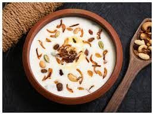

Elaneer Payasam Recipe

Elaneer payasam is an easy sweet/ dessert to prepare, yet an impressive
one.
Tender coconut with its refreshing water is by itself tasty with all its
coolant effect to our body added to it.
Here, we are just mixing it with few simple other ingredients to make
elaneer payasam
Ingredients
- ¾ cup Tender coconut pulp
- 1 cup Tender coconut water
- 1 cup Milk
- 3 tablespoon Condensed milk
- 4 Cashew nuts
- ½ teaspoon Ghee
Steps
-
Boil milk and put the flame to medium or low and let it thicken for 5
minutes.
-
Cool the milk completely. Meanwhile, grind tender coconut pulp, water
coarsely or smoothly, which ever texture you prefer.
- Save few bits for garnish.Golden fry cashew nuts in ghee
- Mix the ground pulp to the cooled milk.
-
Add condensed milk, cashew nuts along with cardamom powder and mix well.
Serve chilled.